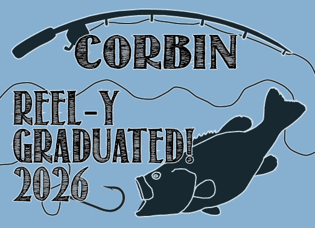

I have used photoshop the longest and I generally just use it for photo or graphic touchups.




I have used Illustrator the most and I have made many logos and general graphics using it.


I have the least experience with InDesign but I have used it many times in the creation of Newsletters and Advertisments.


When it comes to software other than the big Adobe programs, im the most well versed in Krita. I have used Krita for personal works and for making character designs for games.